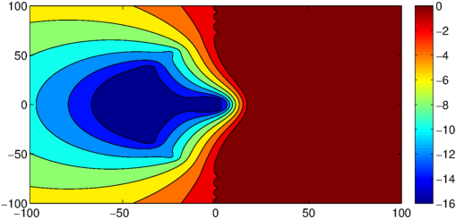
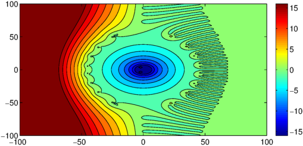

Approximation of the exponential function has many applications, some of which are described in other Chebfun examples. Here we consider approximating $e^z$ via a rational function in a region in the complex plane, in the context of computing the matrix exponential $e^A$ via the scaling and squaring method, the most commonly used method for this purpose, cf. chapter 10 of [2]. Constructions of rational approximations to $e^z$ on a real interval are described in [3].
In brief, the scaling and squaring method is based on a type $(2^sm,2^sm)$ rational approximation to the exponential in a region in the complex plane that contains the eigenvalues of $A$, where $s$ and $m$ are suitably chosen integer parameters. It first computes $e^A$ by first choosing an integer $s$ such that $A/2^s$ has norm of order $1$, then taking a rational (normally type $(m,m)$ Pade) approximation $r(z)$ to $e^z$ where $m$ is chosen so that $e^{A/2^s}\approx r(A/2^s)$. Then we compute $e^A\approx (r(A/2^s))^{2^s}$ via repeated squaring of the matrix.
(Note that the letter e in the name Pade should have an accent aigu, but we dispense with this in a Chebfun Example to avoid trouble in some web browsers.)
Suppose $A$ is diagonalizable and $A=X\mbox{diag}(\lambda_i)X^{-1}$. Then this method approximates
$$ e^A=X\mbox{diag}(e^{\lambda_i})X^{-1} $$
by
$$ Y:=X\mbox{diag}((r(\lambda_i/2^s))^{2^s})X^{-1}\approx e^A, $$
and the error satisfies
$$ \|e^A - Y\|_2 \leq \kappa_2(X)\max_{z\in {\cal D}}\left|(r(z/2^s))^{2^s}-e^{z}\right|, $$
where $\cal{D}$ is a region in the complex plane that contains the eigenvalues of $A$, and $\kappa_2(X)=\|X\|_2 \|X^{-1}\|_2$ is the 2-norm condition number of the eigenvectors. The term $\max_i\left|(r(\lambda_i/2^s))^{2^s}-e^{\lambda_i}\right|$ represents the exact error if $A$ is a normal matrix: the term $\kappa_2(X)$ can have nontrivial effects on the method for nonnormal $A$, but this is outside the scope of this example. Below we investigate the error $\left|(r(z/2^s))^{2^s}-e^{z}\right|$ where $z$ takes points in the complex plane. If this is small in the whole region $\cal D$, then $Y$ is a good approximation to $e^A$.
The type $(k,m)$ Pade approximant of the exponential is explicitly known to be $r(z)=p_{k,m}(z)/q_{k,m}(z)$, where
$$ p_{k,m}(z)=\sum_{j=0}^{k}\frac{(k+m-j)!k!}{(k+m)!(k-j)!}\frac{z^j}{j!}, \quad q_{k,m}(z)=\sum_{j=0}^{m}\frac{(k+m-j)!m!}{(k+m)!(m-j)!}\frac{(-z)^j}{j!}. $$
Alternatively (and in particular for general functions for which Pade approximants are not explicitly known), Pade approximants can be obtained simply and robustly via the Chebfun command padeapprox, see [1].
Here is a contour plot of the logarithm of $\max_{z\in {\cal D}}\left|(r(z/2^s))^{2^s}-e^{z}\right|$ for the case $s=2$ and $m=8$:
s = 2; m = 8; f = [1 , 1./cumprod(1:50)]; % or f = @(z)exp(z); [r,a,b] = padeapprox(f,m,m,0); xgrid = linspace(-100,100,140); [x,y] = meshgrid(xgrid,xgrid); z = x + 1i*y; contourf(x,y,log10(abs(exp(z) - r(z/(2^s)).^(2^s))+eps),[-16:2:0]) colorbar

Since we are using a Pade approximation centered at the origin, the error is zero at the origin and is expected to grow with $|z|$. However, notice that the plot is highly nonsymmetric about the imaginary axis: the error is large for large $\mbox{Re}(z)>0$ and small for $\mbox{Re}(z)<0$. In particular, the region in which the error is $O(10^{-14})$ stretches much farther into the left complex plane than the right, reaching $\mbox{Re}(z)\approx -65$. This is perhaps not surprising because $e^z$ (literally) grows exponentially with $\mbox{Re}(z)$, so for $\mbox{Re}(z)\ll 0$ we have $|e^z|=e^{\mbox{Re}(z)}\approx 0$ and the error is essentially just $\left|(r(z/2^s))^{2^s}\right|$, which is itself small for moderately large $s$ provided that $|(r(z/2^s))| < 1$.
The relative error $\frac{1}{|e^{z}|}\left|(r(z/2^s))^{2^s}-e^{z}\right|$, on the other hand, looks completely different:
contourf(x,y,log10(abs(exp(z) - r(z/(2^s)).^(2^s))./abs(exp(z))),[-16:2:16]) colorbar

The graph shows that $(r(z/2^s))^{2^s}$ has no digits of relative accuracy except in the blue region.
The two plots illustrate for example that around the point $z = -50$, the relative accuracy is terrible but the absolute accuracy is of order unit roundoff. Hence $(r(z/2^s))^{2^s}$ is a good approximant near $z=-50$ if we are concerned with absolute accuracy instead of relative accuracy.
In the context of the matrix exponential, the forward error is measured by the quantity $\|e^A- Y\|_2/\|e^A\|_2$, which for normal $A$ reduces to
$$\max_i\left|(r(\lambda_i/2^s))^{2^s}-e^{\lambda_i}\right|/e^{\max_i{\mbox{Re}(\lambda_i)}}\leq \max_{z\in {\cal D}}\left|(r(z/2^s))^{2^s}-e^{z}\right|/e^{\max_i{\mbox{Re}(\lambda_i)}}.$$
Since the denominator is constant (when $z$ varies in $\cal D$), this means the absolute error is indeed the appropriate metric of error in the $e^A$ context. The implication is that $e^A$ is well-approximated by $Y$ if the eigenvalues of $A$ lie inside the dark-blue region in the first plot.
References
-
P. Gonnet, S. Guettel, and L. N. Trefethen: Robust Pade approximation via SVD. SIAM Review, 55 (2013), 101-117.
-
N. J. Higham. Functions of Matrices: Theory and Computation. SIAM, Philadelphia, 2008.
-
L. N. Trefethen, J. A. C. Weideman, and T. Schmelzer: Talbot quadratures and rational approximations. BIT Numerical Mathematics, 46 (2006), pp. 653-670.